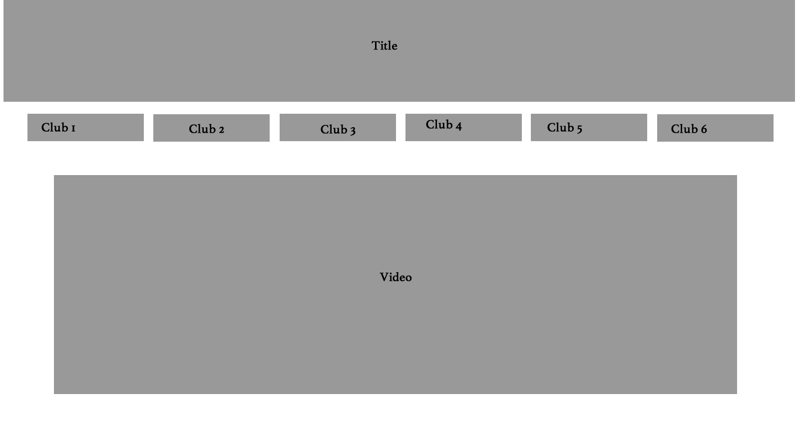

Making Home Page
This page will explain how I made my Home Page
Wireframe Ideas
A Wireframe is the skeletal framework of a website. These are the two Wireframes I have created.
I chose the 2nd Wireframe because there are less things that the user can click on, so the home page will be easier to use. Also it does not show all the clubs on the home page
so it is less cluttered and feels more organized for the user.

Storyboard
A Storyboard is the Wireframe with color, pictures, and text. It can show how you want the website to look like. This is the storyboard I have created.

Feedback
The video might take up too much of the space, so I make the space for the video smaller.
The homepages I have made
In class I learned how to make the home page for my website using Fireworks and Dreamweaver.
Fireworks is a tool for creating images.
Dreamweaver is a tool for developing a webpage.
For fireworks, you need to use the slice tool and slice the storyboard into many pieces according to your wireframe. For dreamweaver, you need
to create AP divs for the parts you sliced in fireworks. Then you add the text, color, and images using html.
Both homepages follow the original flowchart and achieves the objectives.
The homepages allows the students to find clubs they will be interested in because they are seperated in categories.
Learning
While creating the Dreamweaver homepage, I learned how to use z-index for css. I was having trouble ordering the AP divs, but by using z-index I could set the order of them.
Website that I used to learn about z-index.
Comparison and Evaluation
After using both Fireworks and Dreamweaver to create a home page, I have noticed many differences between them.
Fireworks is more user friendly because you just need to create the images instead of typing html/css. You don't need to
know html/css to make your homepage on fireworks. Also it takes less time to create your home page on Fireworks than Dreamweaver.
However using Dreamweaver allows you to have more customization and it is easier to change something. Also since the Fireworks
version is all images you can't search them on google but you can for Dreamweaver.
For example say that I want to change the logo for my website. If I use Fireworks I need to delete the slice and the original logo, and
then put in the new logo and slice it again. THEN I need to export it into html again. But for Dreamweaver it is easier
because you just need change the link to your new logo.
- Fireworks
- More user friendly
- Don't need to understand html/css
- Quicker to create a completed homepage
- Less customization
- Harder to change something
- Can't search the text on google
- Dreamweaver
- Not as user friendly
- Need to understand how to use html/css
- Takes longer to create a competed homepage
- More customization
- Easier to change something
- Can search the text on google
Review
The flowchart and homepage is user-focused because the user can choose the category that they are interested in
to find clubs they would join. The audience (AIS Students) is specific enough because they are the students who would use the website.


{kind=link}
{kind=link}